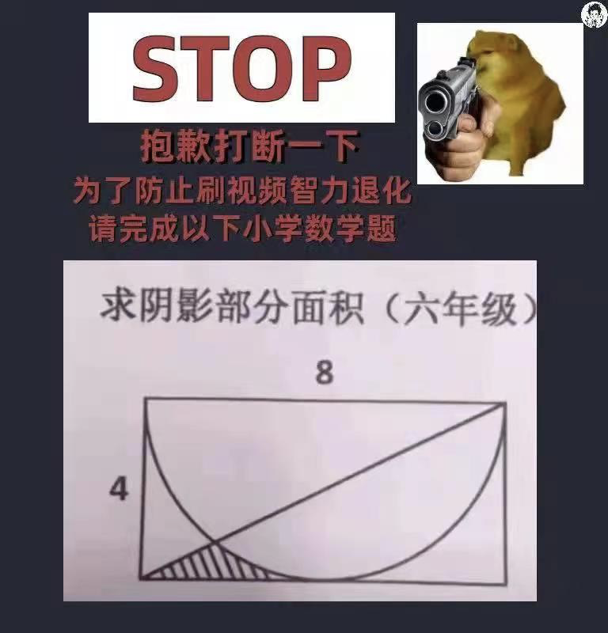
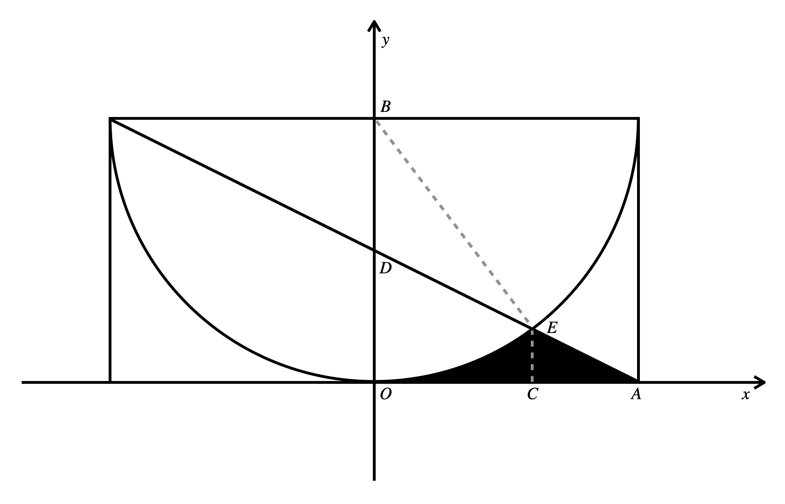
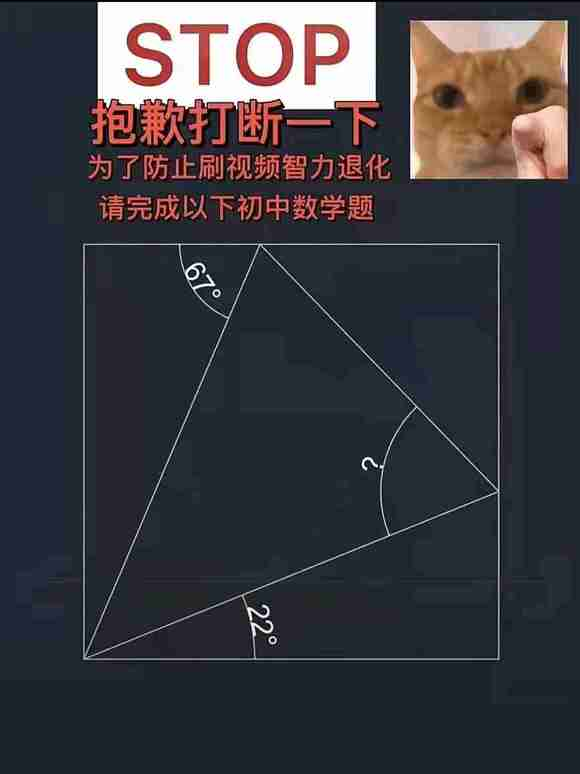

关注公众号【算法码上来】，每日算法干货马上就来！


今天网上冲浪的时候突然看到一道小学六年级的数学题，如上图所示，求阴影部分的面积。
我下意识就想到了微积分，这不就建立坐标系，求出交点，计算积分就行了嘛。转念一想，小学生哪里会积分，这道题一定有简单的解法。
经过一番努力，我尝试出了一共两种精确解法和一种近似解法，但都超出了小学生的理解范畴。
首先我们把图左右翻转一下，方便建立坐标系，如下图所示：

积分方法
首先联立半圆和对角线的方程：
$$
\begin{aligned}
x^2+(y-4)^2-16&=0 \\
x+2y-4&=0
\end{aligned}
$$
解出交点E的坐标是$(\frac{12}{5}, \frac{4}{5})$
所以可以直接求下面积分，得到要求的阴影面积：
$$
\int_{0}^{\frac{12}{5}}{\left(\sqrt{16-x^2}+4\right)}dx + \int_{\frac{12}{5}}^{4}{\left(2-\frac{1}{2}x\right)}dx
$$
利用简单的高等数学知识，可以解出答案是下面这样的，约等于1.252。
$$
\frac{32}{5} - 8 \arcsin{\frac{3}{5}}
$$
但是小学生肯定不会积分呀，就算高中生大多数都不会！
间接计算
既然我们不方便算这个不规则图形的面积，我们可以计算其他规则图形的面积，然后加减之后间接得到答案。
图中阴影部分面积其实等价于三角形ACE+梯形BOCE-扇形BOE，而这三部分其实都非常好算。
因为E的坐标是$(\frac{12}{5}, \frac{4}{5})$，所以最难算的就是扇形BOE的面积，也就是要求角OBE的大小。很轻松就可以得到角度是$\arcsin{\frac{3}{5}}$，所以三部分运算后可以得到和上面积分相同的答案。
这个方法初中生都会做了！但是对于小学生来说难度还是有点大了。
蒙特卡洛采样方法
如果往第一象限正方形内随机抛撒若干豆子，然后看掉落在阴影部分里的豆子所占的比例，那么就可以近似估计出阴影部分的面积了，这就叫蒙特卡洛采样。
那我们可以随机生成两个随机数，作为采样点的坐标，然后判断是否在阴影部分里，重复上述过程，记录次数就行了。
我这里写了C++和CUDA两个实现，CUDA可以并行采样，速度快很多。
执行的话，C++保存为test.cpp，然后执行g++ test.cpp -o test和./test。CUDA保存为test.cu，然后执行nvcc test.cu -o test和./test。
实测CUDA相同时间内可以采样的次数大约是100倍左右，主要受到原子写操作的局限，不然可以达到1000倍左右的加速。
但是小学生会CUDA吗？显然不可能。
C++实现
#include <iostream>
typedef unsigned long long int ull;
int main() {
srand(time(NULL));
ull res = 0;
ull cnt = 1e8;
for (ull i = 0; i < cnt; ++i) {
double x = double(rand()) / RAND_MAX;
double y = double(rand()) / RAND_MAX;
if (x * x + (y - 1) * (y - 1) > 1 && x + 2 * y - 1 < 0) {
res += 1;
}
}
printf("%.5f\n", res * 16.0 / cnt);
return 0;
}CUDA实现
#include <iostream>
#include <chrono>
#include <curand_kernel.h>
typedef unsigned long long int ull;
__global__ void monte_carlo_kernel(ull* res, ull cnt, const int seed) {
ull i = blockIdx.x * blockDim.x + threadIdx.x;
if (i >= cnt) return;
curandStatePhilox4_32_10_t state;
curand_init(seed, i, 0, &state);
double2 rand = curand_uniform2_double(&state);
double x = rand.x;
double y = rand.y;
if (x * x + (y - 1) * (y - 1) > 1 && x + 2 * y - 1 < 0) {
atomicAdd(res, 1);
}
}
void launch_monte_carlo(ull* res, ull cnt, cudaStream_t& stream) {
ull grid_dim = cnt >> 10;
monte_carlo_kernel<<<grid_dim + 1, 1024, 0, stream>>>(
res, cnt,
std::chrono::duration_cast<std::chrono::microseconds>(
std::chrono::system_clock::now().time_since_epoch())
.count());
}
int main() {
ull* res;
cudaMallocManaged(&res, sizeof(ull));
res[0] = 0;
ull cnt = 1e10;
cudaStream_t stream;
cudaStreamCreate(&stream);
launch_monte_carlo(res, cnt, stream);
cudaDeviceSynchronize();
printf("%.5f\n", res[0] * 16.0 / cnt);
cudaFree(res);
return 0;
}标准方法
其实标准的小学生解法不需要建坐标系，只需要如下图所示，做4条辅助线就行。

很容易证明，辅助线将三角形ACD划分出来的5个小三角形是全等的。
那么阴影面积就等于正方形AOBD减去四分之一圆BOD，再减去最右侧的弧边三角形ADE。而弧边三角形ADE面积等于三角形ACD减去三角形BCE，再减去扇形BDE。
所以问题的关键就是求角DBE的大小，因为小三角形的边长可以轻易求出，所以最终答案很好算：
$$
\frac{32}{5}-4\pi+16 \arctan{\frac{1}{2}}
$$
可以发现和之前高等数学得到的结果形式并不同，其实数值是一样的，所以我们得到了一个等式：
$$
4\arctan{\frac{1}{2}}+2\arcsin{\frac{3}{5}}=\pi
$$
这个可能看起来不是那么直观，但确实是成立的，根据反三角函数恒等式$2\arctan x = \arctan \frac{2x}{1-x^2}$，可以推出等号左边等于$2(\arctan \frac{4}{3} + \arcsin \frac{3}{5})$。构造一个边长3、4、5的直角三角形，显然答案就是$\pi$。
总结与拓展
其实这道题小学生也没几个人能做出来，就算给我们做也得费老鼻子劲，还不一定算的对。
最近还看到了很多类似的趣图，这里分享给大家，闲暇时间可以做了玩玩。
可以在评论区说出你的答案哦。
